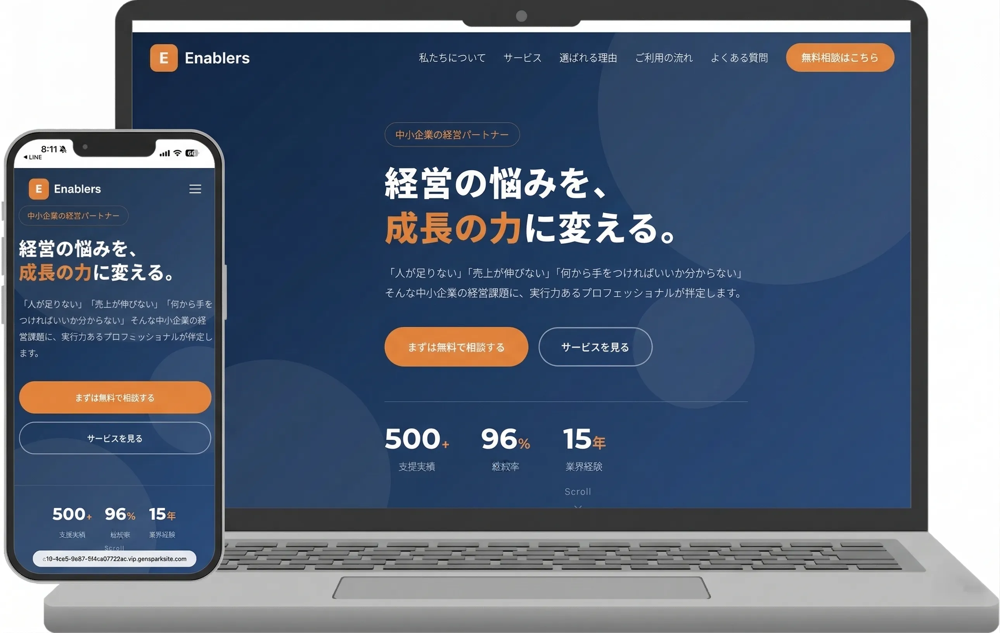

Web制作
ホームページ・LP制作など。目的と想いをくみ取り、見やすく伝わるサイトを丁寧に制作します。
詳しく見る →YM Design & Co.
Web制作・SNS運用サポート・営業コンサルまで。
お客様の想いに寄り添い、未来づくりを支えます。
「何から始めればいいかわからない」そんな段階でも大丈夫です。
作ることだけでなく、今の状況や想いを整理しながら、
必要な形を一緒に考えていきます。
Web制作からデザイン、SNS運用サポート、集客のご相談まで。
事業の規模やご予算に合わせて、一番合った方法を一緒に考えます。
ホームページ・LP制作など。目的と想いをくみ取り、見やすく伝わるサイトを丁寧に制作します。
詳しく見る →バナー・チラシ・名刺・Instagram投稿画像など。ブランド雰囲気を大切にしながら、伝わるビジュアルに仕上げます。
詳しく見る →InstagramをはじめとしたSNSの投稿制作から運用サポートまで。 継続的な発信を支え、伝わるアカウントづくりをお手伝いします。
詳しく見る →営業代行を含む販促・集客サポートとして、チラシ・名刺・販促ツール制作から、集客相談まで幅広く対応しています。
詳しく見る →
「ちゃんと向き合ってもらえた」と感じてもらえることを、
いちばん大切にしています。
ただ作業をこなすのではなく、あなたの事業や想い、伝えたいことを時間をかけて丁寧に受け取ります。「うまく言葉にできない」という状態でも、一緒に整理しながら進めていきます。
「丸投げOK」ではなく、「一緒に考えながら形にしていく」スタイルを大切にしています。決まっていないことがあっても大丈夫。進めながら整理していきましょう。
大変なことも前向きに。関わるすべての方に笑顔になってほしい——そんな想いで仕事に向き合っています。制作が終わったあとも、共に育てていける存在でありたいと思っています。
業種や目的に合わせ、伝わりやすさと見やすさを意識して制作しています。
どんな課題に向き合い、どう考えて形にしたかも合わせてご覧ください。
リスト獲得を目的としたLPを改善。ターゲットの悩みに寄り添う構成に見直すことで、リスト単価の半減を実現しました。

AIツールを活用したスピード制作。クライアントの世界観をくみ取り、シンプルで伝わるホームページに仕上げました。

AIを使ったコンテンツ制作と組み合わせ、短納期でクオリティの高いサービスサイトを制作。継続依頼につながっています。

アカウント設計から投稿画像制作・テキスト作成まで一括サポート。ブランドの雰囲気が統一されたフィードを目指して運用中です。

複数サイズのバナーをシリーズで制作。ターゲットに響くビジュアルとコピーで、クリック率の向上に貢献しました。
成果だけでなく、「また相談したい」と思っていただけることを大切にしています。
LP改善をお願いしたところ、ターゲットに刺さる構成に見直してもらい、リスト獲得単価が約半分になりました。数字に直結する提案をしてもらえて、本当に依頼してよかったです。
「作ったら終わり」ではなく、その後の反応を見ながら一緒に考えてもらえます。聞きやすい雰囲気で、細かな修正にも丁寧に対応してもらえるので、長くお付き合いできています。
「こんなこと頼めるかな？」という段階でも大丈夫です。
目的や状況に合わせて、丁寧にお話を伺います。
「こんなこと頼めるかな？」という段階でも大丈夫。
目的や状況に合わせて、丁寧にお話を伺います。